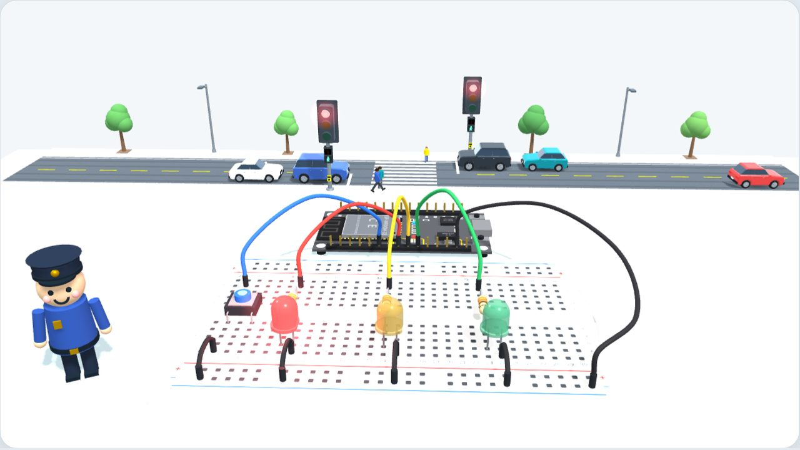

Lessons 0–4
Watch what you will build
A tiny computer, a traffic light, a button and a fair crossing.
🔈 Sound on
❚❚ Pause
Your turn!
Build it, wire it and code it, one lesson at a time.
Start with lesson 0 →